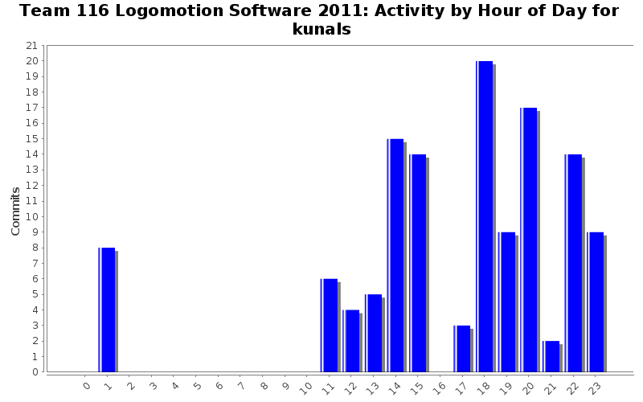
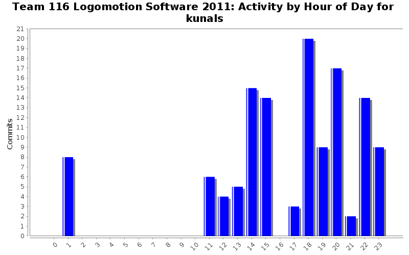
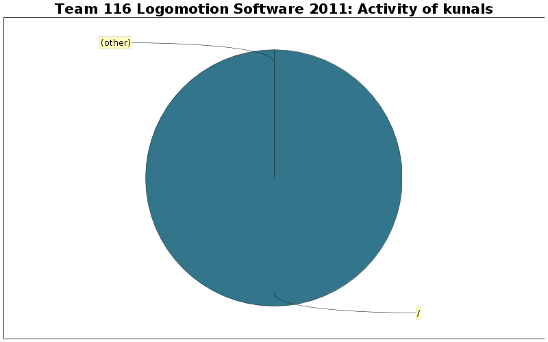

Activity by Clock Time



| Directory | Changes | Lines of Code | Lines per Change |
|---|---|---|---|
| / | 126 (100.0%) | 1140 (100.0%) | 9.0 |

Added some logging statements
16 lines of code changed in 7 files:
Fixed declaration of MAXIMUM_DEBUG_LEVEL
1 lines of code changed in 1 file:
Added comments and debug level checking to Log::write()
21 lines of code changed in 2 files:
Added a logging class for logging important information, warnings, and errors.
97 lines of code changed in 13 files:
Added some logging code to Mobility
7 lines of code changed in 3 files:
Added declaration for Log in Robot.cpp
11 lines of code changed in 1 file:
Deleted some out of date comments in Grabber
0 lines of code changed in 2 files:
Fixed a few errors in EndEffector
12 lines of code changed in 2 files:
Changed all occurrences of :TODO: to @todo so Doxygen will pick them up
9 lines of code changed in 6 files:
Fixed silly errors in MinibotDeployment.cpp
12 lines of code changed in 1 file:
Renamed GPIO_SLOT to DSIDECAR1_SLOT
7 lines of code changed in 2 files:
Deleted PWM_SLOT since it is not being used and Fixed build errors from the DriverStation.
The Grabber Victors are now using GPIO_SLOT since it is for the Digital Sidecar.
4 lines of code changed in 3 files:
Fixed Digital Sidecar slot
1 lines of code changed in 1 file:
Added stow piston and wrote the Elevator::set_arm_position() function
20 lines of code changed in 3 files:
Fixed spelling error in Grabber.cpp and renamed Mobility gear shifting functions to be clearer.
12 lines of code changed in 3 files:
Fixed MinibotDeployment header and added shifting pistons to Mobility
18 lines of code changed in 3 files:
Quickly fixed comment for ROTATE_DRIFT_ANGLE
3 lines of code changed in 1 file:
Fixed Navigation so that it now compiles.
Declared an AnalogChannel and a Gyro. Temporarily defined ROTATE_DRIFT_ANGLE because I don't know what it is does.
24 lines of code changed in 3 files:
Forgot to include Mobility.h in Navigation.h
4 lines of code changed in 2 files:
Added Navigation source file
24 lines of code changed in 2 files:
(28 more)